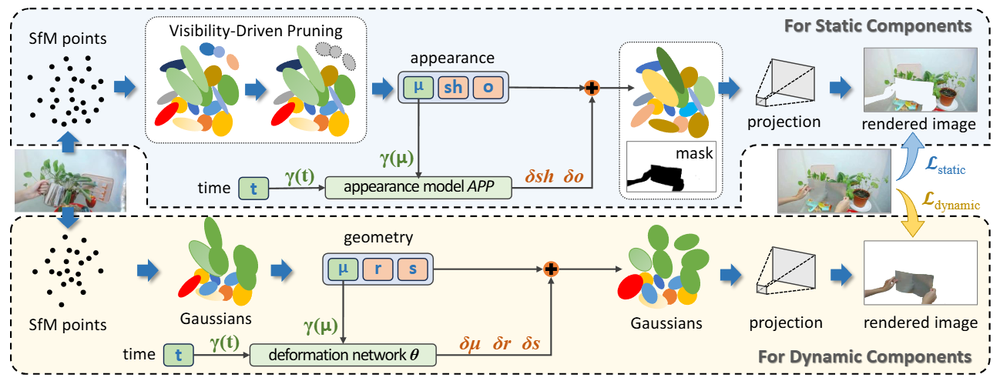

Method Overview

Figure 1: Framework Overview. We adopt a two-stage training pipeline: Stage I disentangles static and dynamic Gaussians via region-specific supervision and visibility-driven pruning to enhance geometric stability; Stage II jointly optimizes both components, where static appearance is modeled without deformation and dynamic motion is learned via a spatiotemporally-conditioned deformation network, enabling mutual refinement and improved reconstruction fidelity.
Demo Video
Abstract
Reconstructing dynamic 3D scenes from monocular video remains fundamentally challenging due to the need to jointly infer motion, structure, and appearance from limited observations. Existing dynamic scene reconstruction methods based on Gaussian Splatting often entangle static and dynamic elements in a shared representation, leading to motion leakage, geometric distortions, and temporal flickering. We identify that the root cause lies in the coupled modeling of geometry and appearance across time, which hampers both stability and interpretability. To address this, we propose SplitGaussian, a novel framework that explicitly decomposes scene representations into static and dynamic components. By decoupling motion modeling from background geometry and allowing only the dynamic branch to deform over time, our method prevents motion artifacts in static regions while supporting view- and time-dependent appearance refinement. This disentangled design not only enhances temporal consistency and reconstruction fidelity but also accelerates convergence. Extensive experiments demonstrate that SplitGaussian outperforms prior state-of-the-art methods in rendering quality, geometric stability, and motion separation.
Free Viewpoint
The following shows the results under free-viewpoint rendering.
Fixed Viewpoint
The following shows the results from a fixed viewpoint.